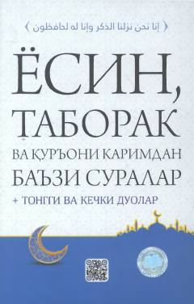

YTQur'oni karim suralari, duolar va ularning tajvidli o'qilishi hamda audio imkoniyatlari.
Ushbu kitob Qur'oni karimning Yosin va Taborak suralari hamda boshqa ba'zi suralarni o'z ichiga oladi. Kitobda arab tilini bilmaydiganlar uchun suralar kirill alifbosida tajvid qoidalariga muvofiq tarzda taqdim etilgan va QR-kodlar orqali audio tinglash imkoniyati mavjud.